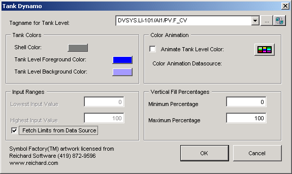

Now you will add a tank that, in run mode, is supposed to
show the level of the product in the tank by changing color. (This will not
actually happen, since we do not have a working system with I/O.)
First, close the
PumpsAnim dynamo set by selecting and
right-clicking
PumpsAnim in the system tree, and then
selecting
Close.
Double-click the
TanksAnim1 dynamo set in the system tree to
open the dynamo set.
Drag the tank labeled
TankWDoorD1 to your picture, placing it a
little above the motor, as in the figure shown earlier.
On the
Tank Dynamo dialog, browse for the following tag
for the tank level.
LI-101/AI1/PV/CV
The system automatically adds .F_CV as the field.

In the
Input Ranges group, select
Fetch Limits from Data Source.